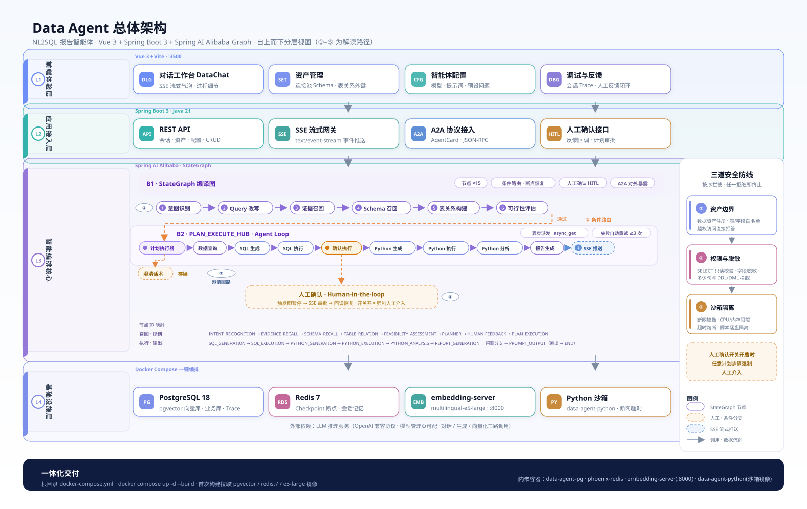
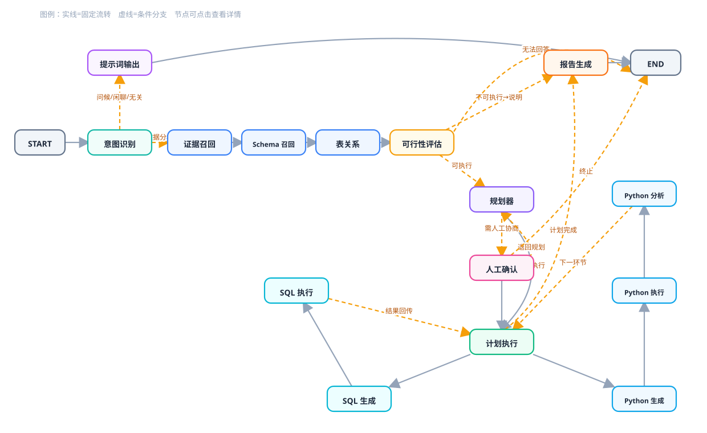
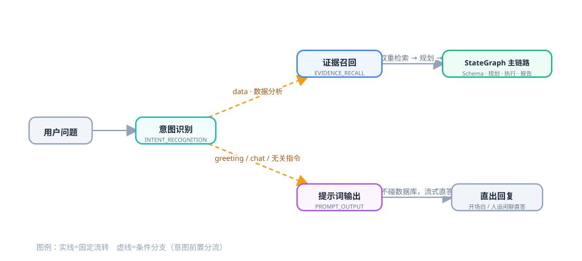
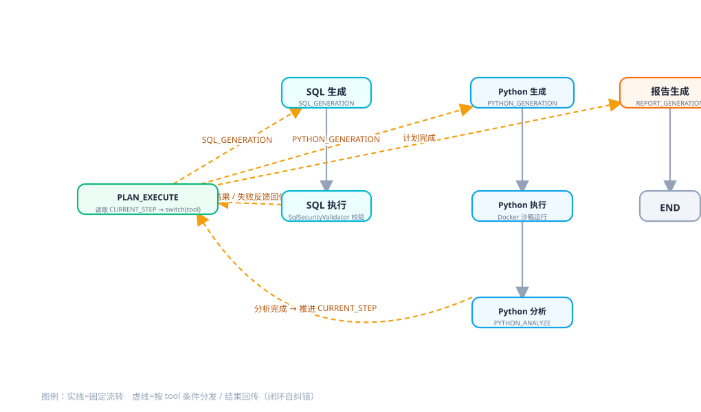
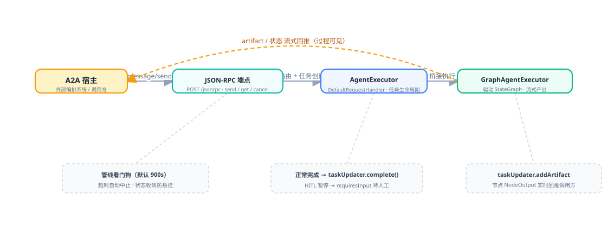

从架构师视角拆解：先讲架构思维，再落到 StateGraph 拓扑、沙箱权限隔离、意图识别、双通道召回＋Schema、规划器与 A2A 协议，最后给出演进建议
开场先讲清“我们为什么这么搭”。后续所有模块的取舍，都服务于下面四个目标。
这是一个面向 电商经营数据问答 的企业级 Text2SQL 智能体：用户用自然语言提问（例如“上个月各品类销售额排名”），系统沿 意图识别 → 证据召回 → Schema 召回 → 规划 → SQL / Python 执行 → 报告生成 的完整链路，最终流式返回图表与结论。
| 目标 | 落地手段 |
|---|---|
| 可控：LLM 不稳定，流程必须可拆解、可断点、可重放 | 用 StateGraph 图编排替代“单体巨型提示词”，一步一个节点，状态集中管理 |
| 安全：直接操作生产业务库 | SQL 只读白名单校验 + 权限结果脱敏 + Python Docker 沙箱，三层纵深防御 |
| 准确：压制 Hallucination 与业务歧义 | 结构化 Schema + 非结构化业务知识双通道 RAG 召回，喂准上下文 |
| 协同：Agent 不再是“孤岛” | A2A / JSON-RPC 把本 Agent 暴露给外部编排系统；HITL 人工确认应对高风险动作 |
宏观视角：谁在什么位置、数据往哪流、依赖往哪走。

图 2-1 · 总体架构（分层 + 数据流）
| 组件 | 选型 | 架构师视角的取舍 |
|---|---|---|
| 图编排 | Spring AI Alibaba Graph（StateGraph） | 把“状态机”与“LLM 节点”统一抽象：节点写共享 State，边负责条件路由，天然适配编排与回环 |
| 结构化召回 | 表/字段向量化入 pgvector | 动态建库场景下 Schema 会变化，用向量 + 元数据过滤召回最相关表/列 |
| 非结构化召回 | 业务词条 / 问答对入向量库 | 覆盖业务口径与术语映射，降低 NL2SQL 歧义 |
| 嵌入服务 | FastEmbed 多语言 e5-large（独立容器） | 数据问答是中文场景，选多语言模型；独立 HTTP 服务可水平扩展、可复用 |
| Python 执行 | Docker 一次性容器（--network none） | 强隔离：无网络、限 CPU/内存/PID、只读挂载、超时强杀 |
| Agent 互通 | A2A 协议（JSON-RPC） | 把“SQL 生成 Agent”暴露为标准 Agent，可被其它 Agent 编排系统调用 |
这是项目的心脏。先给整体拓扑，再讲节点与边的登记方式。（绿=数据处理，紫=提示词输出，橙=入口/端点）

图 3-1 · 数据问答 Agent 执行图拓扑（START→意图识别→证据召回→Schema→可行性→规划→执行/report→END；虚线=条件分支；人工确认开关在规划中，本期按需求澄清型 HITL 描述）
把 16 个节点注册进图：用 addEdge 串主链、用 addConditionalEdges 做条件路由。
// 意图识别 → 条件路由：data 走证据召回，非 data 走提示词输出
.addConditionalEdges(Graph.Node.INTENT_RECOGNITION,
AsyncEdgeAction.edge_async(new IntentRecognitionEdge()),
Map.of(Graph.Node.EVIDENCE_RECALL, Graph.Node.EVIDENCE_RECALL,
Graph.Node.PROMPT_OUTPUT, Graph.Node.PROMPT_OUTPUT))
// 可行性评估 → 可行进规划器，不可行直接出报告，或收尾
.addConditionalEdges(Graph.Node.FEASIBILITY_ASSESSMENT,
AsyncEdgeAction.edge_async(new FeasibilityAssessmentEdge()),
Map.of(Graph.Node.PLANNER, Graph.Node.PLANNER,
Graph.Node.REPORT_GENERATION,Graph.Node.REPORT_GENERATION,
END, END))
// 规划器 → 是否需要人工确认
.addConditionalEdges(Graph.Node.PLANNER,
AsyncEdgeAction.edge_async(new PostPlannerEdge()),
new HashMap<String,String>(){{ put(PLAN_EXECUTION, PLAN_EXECUTION);
put(HUMAN_FEEDBACK, HUMAN_FEEDBACK); }})
// 计划执行 → 下一步是 SQL / Python / 收报告 / 结束
.addConditionalEdges(Graph.Node.PLAN_EXECUTION,
AsyncEdgeAction.edge_async(new PlanExecutorEdge()),
new HashMap<String,String>(){{ put(SQL_GENERATION, SQL_GENERATION);
put(PYTHON_GENERATION, PYTHON_GENERATION);
put(REPORT_GENERATION, REPORT_GENERATION);
put(END, END); }})
// 确定性链路：SQL 生成→执行→回执行器；Python 生成→执行→分析→回执行器
.addEdge(SQL_GENERATION, SQL_EXECUTION).addEdge(SQL_EXECUTION, PLAN_EXECUTION)
.addEdge(PYTHON_GENERATION,PYTHON_EXECUTION).addEdge(PYTHON_EXECUTION,PYTHON_ANALYSIS)
.addEdge(PYTHON_ANALYSIS, PLAN_EXECUTION)
.addEdge(REPORT_GENERATION,END)
.addEdge(PROMPT_OUTPUT, END);数据问答直连业务库，安全是硬约束。按“静态校验 → 结果脱敏 → 运行隔离”三层展开。
在真正执行前，用正则做 白名单式 只读校验，从源头掐断注入与写操作。
// 1) 先剥注释，防止 /* */ 绕过
String normalized = COMMENT.matcher(sql).replaceAll(" ");
// 2) 去掉字符串字面量后再按分号计数，防多语句注入
String noStrings = stripStrings(normalized);
if (countTopLevelSemicolons(noStrings) > 1)
return Result.deny("检测到多条语句，禁止批量执行（防止注入）。");
// 3) 必须以 SELECT 或 WITH...SELECT 开头（白名单入口）
if (!SELECT_HEAD.matcher(normalized).find())
return Result.deny("仅允许 SELECT 只读查询，当前 SQL 不是 SELECT。");
// 4) 禁用 drop/alter/delete/update/insert/truncate/merge/exec/
// pragma/attach/detach/vacuum/create/grant/revoke…
if (FORBIDDEN.matcher(noStrings).find())
return Result.deny("SQL 包含禁用关键字（仅允许 SELECT 只读查询）。");SqlSecurityValidator.validate()
// 敏感列命中即打码（手机号保留前3后4，地址打码）
private static final Set<String> SENSITIVE_COLUMNS = Set.of(
"phone","mobile","tel","address","身份证","手机号","收货地址","联系电话");
// SQL 执行节点出口统一调用脱敏，再交给报告
resultSetWrapper = permissionInterceptor.mask(resultSetWrapper);Python 代码等价于“任意程序”，必须放进一次性、无网络的容器。
docker run --rm -i \
--network none # 完全断网
--cpus 1 # 限制 1 核
--memory 512m # 内存上限（DATA_AGENT_PYTHON_MEMORY_LIMIT 可调）
--pids-limit 128 # 进程数上限，防 fork 炸弹
--security-opt no-new-privileges # 禁止提权
-v workDir:/work:ro # 只读挂载输入
-w /work data-agent-python:latest python /work/script.py// 超时强杀：防止死循环拖垮 JVM
Process process = new ProcessBuilder(command).redirectInput(inputFile).start();
boolean completed = process.waitFor(timeoutSec, TimeUnit.SECONDS);
if (!completed) { process.destroyForcibly();
return new PythonExecutionResult(false, "", "Execution timed out after ... seconds."); }docker: error during connect ... Access is denied 是 Docker daemon 未就绪或权限不足，并非业务逻辑问题。恢复“启动 Docker + 镜像可用”即恢复；因而执行前用 isDockerAvailable() 前置探测，给出更友好报错。不是所有请求都值得走沉重 NL2SQL。第一步先用 LLM + 轻量规则，把问候/闲聊/无关挡在门外。
out.put(Intent.CLASSIFICATION, classification);
out.put(Intent.TYPE, detectType(userInput, classification)); // 落到三类
return out;
// 规则兜底：问候词命中或模型判“问候/打招呼”→ greeting
static String detectType(String userInput, String classification) {
if (isGreeting(u) || c.contains("问候") || c.contains("打招呼"))
return Intent.GREETING;
if (c.contains("闲聊") || c.contains("无关") || c.contains("聊天"))
return Intent.CHAT;
return Intent.DATA; // 其余全部视为数据问答
}INTENT_TYPE ∈ { greeting, chat, data }
if (Intent.DATA.equals(type)) return Graph.Node.EVIDENCE_RECALL;
return Graph.Node.PROMPT_OUTPUT;
图 5-1 · 意图分类 → 分流
问候 → 直接 Flux 输出配置好的开场白；闲聊/无关 → 按人设提示词交大模型流式直答，不再碰数据库。
if (Intent.GREETING.equals(type)) {
String opening = notBlank(cfg.getOpeningMessage()) ? cfg.getOpeningMessage() : defaultOpening();
out.put(Execution.REPORT_RESULT, plainFlux(opening)); // 原始开场白单帧流出
} else {
String persona = notBlank(cfg.getPersonaPrompt()) ? cfg.getPersonaPrompt() : defaultPersona();
out.put(Execution.REPORT_RESULT, chatFlux(persona, userInput, multiTurn)); // 流式闲聊
}Text2SQL 的准确率，很大程度取决于“喂给 LLM 的上下文对不对”。这里采用非结构化知识 + 结构化 Schema双通道并举。
// 改写为独立检索查询
EvidenceQueryRewriteResult convert =
new BeanOutputConverter<>(EvidenceQueryRewriteResult.class).convert(rewriteResponse);
String rewriteQuery = convert.getStandaloneQuery();
// 双通道召回（VectorStore + databaseId 元数据过滤）
List<Document> glossaryKnowledge = retrieveGlossary(rewriteQuery, databaseId);
List<Document> knowledgeDocs = retrieveKnowledge(rewriteQuery, databaseId);
List<QuestionKnowledge> qkList = questionKnowledgeMapper.findByIds(...);EvidenceRecallNode.apply()
表结构是动态的，因此把「表、字段」描述向量化，按查询相似度召回候选并过滤当前库：
// 表级：topK=10，过滤库内 TABLE 类型向量
SearchRequest tableReq = SearchRequest.builder().query(rewriteQuery)
.filterExpression(b.and(b.eq(VECTOR_TYPE, TABLE),
b.eq(DATABASE_ID, databaseId)).build())
.topK(10).build();
// 列级：topK=30，过滤 COLUMN 类型向量
SearchRequest columnReq = SearchRequest.builder().query(rewriteQuery)
.filterExpression(b.and(b.eq(VECTOR_TYPE, COLUMN),
b.eq(DATABASE_ID, databaseId)).build())
.topK(30).build();SchemeReCallNode.retrieveTable / retrieveColumn
vector_type + database_id 双元数据过滤是多库隔离的根基，避免跨库串场。Schema.buildSchemePrompt() 把召回到的表/列/关系统一渲染成 LLM 可读的 Schema 提示。规划器把“召回结果”变成多步、可执行、可自纠错的计划，再由执行器逐条驱动 SQL / Python。
class Plan {
@JsonProperty("thought_process") String thoughtProcess; // 分析思路
@JsonProperty("execution_plan") List<PlanStep> executionPlan; // 步骤列表
}
class PlanStep {
int step;
@JsonProperty("tool_to_use") String toolToUse; // SQL_GENERATE / PYTHON_GENERATE / REPORT…
@JsonProperty("tool_parameters") ToolParameters toolParameters; // 指令 / 建议 / sql_query
}聚合/汇总/历史类问题若被压成 ≤1 条原始 SQL，答案必然残缺。规划器内置重规划回路：
int attempt = 0;
while (true) {
args.put("plan_validation_error", validationFeedback);
plan = callLLM(plannerPrompt, args);
Plan parsed = parse(plan);
if (isDegeneratePlan(rewriteQuery, parsed) && attempt < MAX_REPLAN) {
attempt++;
validationFeedback = "上次计划过简（<=1 条 SQL），无法覆盖聚合/汇总/历史类问题。"
+ "请先分步查询订单/退款明细，再做聚合汇总(SUM/COUNT/GROUP BY)，"
+ "必要时追加 PYTHON_GENERATE_NODE。";
continue; // 携反馈重新规划
}
break;
}“过简计划检测 + 携反馈重规划”自纠错
PLAN_EXECUTE 作为调度中枢，读取当前 CURRENT_STEP，按 tool_to_use 决定下一跳：

图 7-1 · PLAN_EXECUTE 调度中枢：按 tool_to_use 条件分发，执行结果回传形成闭环自纠错
String tool = Plan.getCurrentStep(state).getToolToUse();
switch (tool) {
case SQL_GENERATION: return SQL_GENERATION;
case PYTHON_GENERATION: return PYTHON_GENERATION;
case REPORT_GENERATION: return REPORT_GENERATION;
default: return END;
}结果要以“图 + 结论”交付，且过程要实时可见、能优雅结束——不能再出现“干等加载中”。
节点以 Flux<ChatResponse> 流式吐报告（标题 / ECharts JSON / 结论），并带空闲自动完成守护，防止连接悬挂。
Flux<ChatResponse> stream = ChatClient.create(chatModel)
.prompt().system(reportSystem)
.user(buildReportPrompt(...))
.stream().chatResponse(); // 流式吐报告
// 源码含 REPORT_IDLE_COMPLETION_SECONDS=20L + timeout() 自动收敛
// 前端 DataChat.vue 再加 settleIfReportReady()：报告一有内容、
// 且连接超 20s 无新事件 → 自动标记已完成，双保险杜绝“卡报告生成中”| 模式 | UI 定位 | 展示内容 |
|---|---|---|
| 复杂模式 | 过程透明、可审计 | 每个节点执行过程、SQL、中间结果、图与结论 |
| 简洁模式 | 只关心答案 | 仅展示「处理流程」缩略提示 + 最终报告，不铺开细节 |
切换模块再回来会话保持完好：答案体与节点结果持久化，靠 Trace 与 State 快照恢复。
把该 Agent 暴露为符合 Google A2A（Agent2Agent） 规范的标准 Agent：任何 A2A 宿主都能通过 JSON-RPC 调用它。
new AgentCard.Builder()
.name("sqlAgent")
.description("专业的 SQL 生成 Agent")
.capabilities(new AgentCapabilities.Builder()
.streaming(true).pushNotifications(true).stateTransitionHistory(true).build())
.skills(List.of(new AgentSkill.Builder()
.id("sql").name("sql generator")
.description("Generate a SQL query").tags(List.of("sql","query")).build()))
.url("http://localhost:3500/api/a2a/jsonrpc")
.additionalInterfaces(List.of(new AgentInterface("JSONRPC",
"http://localhost:3500/api/a2a/jsonrpc"))).version("1.0").build();AgentCard：对外声明身份、能力、技能与传输方式

图 9-1 · A2A 协议栈与执行桥接（上排=请求链，下排=运维守护与终态管理）
图编排最大的收益之一，就是“每一个节点都可被记录、回放、断点”——这也是调试中心的数据来源。
// 节点执行与埋点解耦：任何节点包一层即自动被追踪
TracedNodeAction(action = AsyncNodeAction.node_async(sqlGenerateNode),
nodeName = SQL_GENERATION,
traceService = taskTraceService);所有依赖统一进 docker-compose，一条命令拉起，数据卷保留以便升级不丢数。
services:
data-agent-pg:
image: pgvector/pgvector:pg18 # Postgres + 向量扩展
environment: { POSTGRES_DB: data_agent_tutorial }
volumes: [ data-agent-pgdata:/var/lib/postgresql ]
phoenix-redis:
image: redis:7-alpine # 缓存/会话
command: ["redis-server","--appendonly","yes"]
embedding-server:
build: ./embedding-server # FastEmbed e5-large，独立 HTTP :8000
environment: { EMBED_MODEL: intfloat/multilingual-e5-large }
volumes:
data-agent-pgdata: { external: true } # 复用已存在命名卷，DB 数据不丢
phoenix-redisdata: { driver: local }docker compose up -d --build 一键起；Python 沙箱镜像 data-agent-python:latest 需单独构建/拉取，并确认 Docker daemon 可连接（否则触发 4.3 的 Access denied）。这是一个“把 LLM 的不确定性装进可控编排里”的样本工程：用 StateGraph 固化流程、用双通道召回喂准上下文、用三层沙箱守住安全、用 A2A 打开互通，最终在可控、安全、准确、效率四个维度取得工程化平衡。
证据召回的“隐形第一站”——把多轮对话中的代词、省略句、寒暄噪声，重写为一条独立完整的陈述句（standalone_query），一次改写、全链路复用。
向量检索做的是“语义匹配”，它假设输入是一条语义自足（self-contained）的查询。但真实的多轮对话完全不是这样：
| 原始输入 | 直接检索的问题 | 改写后（standalone_query） |
|---|---|---|
| “那华北呢？” | 只剩“华北”字面相似，丢失“查销售额”这个动作 | “查询华北地区的销售额” |
| “它的销量怎么样” | 代词“它”没有 embedding 意义，召回随机漂移 | “A 产品的销量如何” |
| “嗨，那个，我想知道咱们核心用户的定义到底是啥呀” | 寒暄噪声稀释关键词权重 | “查询核心用户的定义” |
提示词全文见 resources/prompts/evidence-query-rewrite.st，内置 4 组 few-shot 示例覆盖指代、补全、去噪、话题转换四种情形。
改写结果只允许一个字段——standalone_query。通过 BeanOutputConverter 把 Bean 上的 Jackson 注解渲染成 format 指令注入提示词，模型输出再直接反序列化回对象，杜绝自由文本漂移：
public class EvidenceQueryRewriteResult {
@JsonPropertyDescription("重写后的完整句子")
@JsonProperty("standalone_query")
private String standaloneQuery = "";
}
// EvidenceRecallNode.apply() 第一步：渲染改写提示词并调用 LLM
BeanOutputConverter<EvidenceQueryRewriteResult> converter =
new BeanOutputConverter<>(EvidenceQueryRewriteResult.class);
Map<String, Object> args = new HashMap<>();
args.put("latest_query", userInput); // 最新一句
args.put("multi_turn", multiTurn); // 多轮上下文
args.put("format", converter.getFormat());// 注入 JSON 输出契约
String prompt = promptManager.getEvidenceQueryRewritePromptTemplate().render(args);
String response = ChatClient.create(chatModel).prompt()
.options(OpenAiChatOptions.builder()
.extraBody(Map.of("enable_thinking", false)).build()) // 关闭思考链压低延迟
.user(prompt).call().content();
String rewriteQuery = converter.convert(response).getStandaloneQuery();
enable_thinking=false 显式关闭推理模型的思考链——改写是每次问答都走的“快路径”，必须压到亚秒级；返回为空时直接抛错，宁可失败也不拿脏查询去检索。改写结果写入状态键 Recall.REWRITE_QUERY，成为整条链路的“标准查询”（canonical query），后续环节全部消费它而不是原始输入：
按拓扑顺序逐一拆解 15 个业务节点：类型、输入 → 输出、实现要点、关键代码。所有节点都只是 NodeAction.apply(OverAllState) → Map<String, Object>——读状态、做一件事、把结果增量写回状态。
| 范式 | 特征 | 节点 |
|---|---|---|
| LLM 节点 | 三件套：ChatClient.create(chatModel) + enable_thinking=false + BeanOutputConverter 强制 JSON 输出 | 意图识别 / 证据召回 / 表关系 / 可行性评估 / 规划器 / SQL 生成 / Python 生成 / Python 分析 |
| 流式 LLM 节点 | 返回 Flux<ChatResponse>，SSE 直推前端，带空闲超时兜底 | 提示词输出 / 报告生成 |
| 编排节点 | 无 LLM 调用，纯状态读写与路由调度 | 人工确认 / 计划执行 |
| 执行节点 | 与数据库 / 沙箱交互，是安全防线的落点 | SQL 执行 / Python 执行 |
| # | 节点 | 输入 → 输出（状态键） | 一句话职责 |
|---|---|---|---|
| 1 | 意图识别 IntentRecognitionNode | USER_INPUT、MULTI_TURN → Intent.CLASSIFICATION / TYPE | 问候 / 闲聊 / 数据请求三分流 |
| 2 | 提示词输出 PromptOutputNode | Intent.TYPE + agent_config → REPORT_RESULT(Flux) | 开场白 / 人设闲聊回复，不经检索 |
| 3 | 证据召回 EvidenceRecallNode | USER_INPUT → EVIDENCE、REWRITE_QUERY | Query 改写 + 双通道知识检索（见第 13 章） |
| 4 | Schema 召回 SchemeReCallNode | REWRITE_QUERY → TABLE_SCHEMA / COLUMN_SCHEMA | 表 topK10 + 列 topK30 向量召回 |
| 5 | 表关系 TableRelationNode | TABLE/COLUMN_SCHEMA → TABLE_RELATION(finalSchema) | 打分选表 → 外键扩散 → LLM 二次筛表 |
| 6 | 可行性评估 FeasibilityAssessmentNode | Schema+EVIDENCE+REWRITE_QUERY → FEASIBILITY_RESULT | 判定 可答 / 需澄清 / 业务咨询 |
| 7 | 规划器 PlannerNode | REWRITE_QUERY+Schema+EVIDENCE → PLAN | 生成步骤化 Plan JSON，带退化重规划 |
| 8 | 人工确认 HumanFeedbackNode | APPROVED/FEEDBACK/HITL → NEXT_NODE | HITL 开关 + 重试熔断（≥3 次终止） |
| 9 | 计划执行 PlanExecuteNode | PLAN、CURRENT_STEP → NEXT_NODE | 纯调度器：按步骤号路由到工具节点 |
| 10 | SQL 生成 SqlGeneratorNode | 当前步骤 instruction+Schema → SQL_GENERATION_RESULT | 生成方言 SQL 并做三重文本清洗 |
| 11 | SQL 执行 SqlExecuteNode | SQL_GENERATION_RESULT → SQL_EXECUTION_RESULT、step_n | 安全校验 → 执行 → 敏感列脱敏 |
| 12 | Python 生成 PythonGeneratorNode | SQL 结果集+步骤参数 → PYTHON_GENERATION_RESULT | 以真实结果集为样本生成分析脚本 |
| 13 | Python 执行 PythonExecuteNode | PYTHON_GENERATION_RESULT → PYTHON_EXECUTION_RESULT | Docker 沙箱内限网限资源执行 |
| 14 | Python 分析 PythonAnalyzeNode | PYTHON_EXECUTION_RESULT → step_n_analysis | 把脚本输出解读为自然语言结论 |
| 15 | 报告生成 ReportGeneratorNode | PLAN+EXECUTION_OUTPUT+answer_mode → REPORT_RESULT(Flux) | 澄清短路 / 流式报告 / 20s 空闲收口 |
IntentClassificationResult.classification 之外，本地词表兜底——命中“你好 / 在吗 / hello”等直接判 greeting，避免模型抖动把“你好”误判为数据问题；JSON 解析失败时回退用原始响应文本做 contains 判定。static String detectType(String userInput, String classification) {
if (isGreeting(u) || c.contains("问候") || c.contains("打招呼")) return GREETING;
if (c.contains("闲聊") || c.contains("无关") || c.contains("聊天")) return CHAT;
return DATA; // 其余一律走数据链路
}
agent_config（智能助手配置页可改），缺省时回落到内置的「小鑫」默认值；闲聊回复把多轮上下文拼进 user 消息，保持对话连贯。Flux.just 单帧直接返回；闲聊用 .stream().chatResponse()，且包一层 withIdleCompletion(30s)：模型空闲超时立即 complete，保证前端气泡一定收尾。if (GREETING.equals(type)) {
out.put(REPORT_RESULT, plainFlux(opening)); // 开场白：单帧，不调 LLM
} else {
out.put(REPORT_RESULT, chatFlux(persona, userInput, multiTurn)); // 人设闲聊：流式
}
REWRITE_QUERY 后才进入检索。GLOSSARY_KNOWLEDGE，topK 4）+ 问答知识（QUESTION_KNOWLEDGE，topK 4），均按 databaseId 做元数据过滤，实现按库隔离。KNOWLEDGE_ID 回 MySQL 查出完整的「来源 + Q + A」文本，与术语文本一起拼成 EVIDENCE，作为规划与 SQL 生成的业务先验。SearchRequest req = SearchRequest.builder().query(rewriteQuery)
.filterExpression(b.and(
b.eq(VECTOR_TYPE, QUESTION_KNOWLEDGE),
b.eq(DATABASE_ID, databaseId)).build()) // 类型 + 租户双过滤
.topK(4).build();
return vectorStore.similaritySearch(req);
REWRITE_QUERY 召回结构化元数据——表描述 topK 10、列描述 topK 30。TABLE_SCHEMA / COLUMN_SCHEMA 两组 Document（元数据带 TABLE_ID / COLUMN_ID / 相似度 score），是表关系节点做打分与裁剪的原料。TABLE_RELATION（finalSchema JSON：最终表集合 + 全列定义 + 外键视图）。Plan（每步 = 工具 + 参数 instruction），同样用 BeanOutputConverter 强约束输出 JSON。plan_validation_error 一并渲染进提示词，带着“上次为什么不行”重新规划。if (isDegeneratePlan(rewriteQuery, parsed) && attempt < MAX_REPLAN) {
attempt++;
validationFeedback = "上次计划过简（<=1 条 SQL），无法覆盖聚合/汇总类问题。"
+ "请拆分多步：先查明细，再聚合（SUM/COUNT/GROUP BY）…";
continue; // 携带反馈重规划一次
}
REPAIR_COUNT ≥ 3 不再纠缠，路由到 END 终止，防止“确认-驳回-重规划”死循环。if (!hitlEnabled) return next(PLAN_EXECUTION); // 开关关：全自动 if (repairCount >= 3) return next(StateGraph.END); // 熔断 if (approved) return next(PLAN_EXECUTION); // 批准：放行 return next(PLANNER, feedback, repairCount + 1); // 驳回：带反馈重规划
CURRENT_STEP 把 NEXT_NODE 指向计划里当前步骤的 toolToUse。if (currentStep > steps.size()) {
next = lastIsReport ? StateGraph.END : REPORT_GENERATION; // 保底出报告
} else {
next = steps.get(currentStep - 1).getToolToUse(); // 调度到工具节点
}
select|with 关键词，丢弃前面的模型碎碎念 → ③ 截断到最后一个分号，丢弃尾部解释——把 LLM 的自由输出收敛为可执行 SQL。private static final Pattern SQL_START = Pattern.compile("(?is)\\b(select|with)\\b");
// 围栏剥离 → 定位 SELECT/WITH → 截断到最后一个分号
Matcher m = SQL_START.matcher(s);
if (m.find()) s = s.substring(m.start());
int lastSemi = s.lastIndexOf(';');
if (lastSemi >= 0) s = s.substring(0, lastSemi + 1);
SqlSecurityValidator.validate 静态安全校验（仅 SELECT、禁 DDL/DML、防全表扫描）→ PreparedStatement 预编译执行（参数化防注入）→ permissionInterceptor.mask 对敏感列做数据脱敏后出池。step_n 的 error 结果并照常 CURRENT_STEP+1，让后续步骤与报告能看到“哪一步、为什么挂了”，而不是整个图抛异常中断。DisplaySpec（默认 table 视图，首列 x 轴、其余 y 轴），前端表格 / 图表直接消费。sample_input 注入提示词，脚本按真实字段与值域编写——大幅降低“字段名脑补”导致的运行期 Key 错误。SimplePythonExecutor.execute(code, inputJson)——把脚本与输入数据投递进 Docker 沙箱镜像 data-agent-python 执行，网络与资源受限（详见第 04 章三道防线）。PYTHON_EXECUTION_RESULT。step_n_analysis——报告生成节点拼装素材时会优先引用它，让最终报告“说人话”而不是堆 JSON。report-generator-plain.st（内置 ECharts cleanJsonExample 引导模型产出可直接渲染的图表 JSON）。answer_mode（concise / detail）作为模板变量进入提示词——前端“简洁 / 复杂”模式的文案风格分叉点就这里，而过程细节的折叠则由前端按模式控制。withIdleCompletion(20s)：模型一旦空闲超时立即 complete——这是治理“报告生成中…”卡住的关键兜底，前端气泡无论如何都会收尾退出加载态。// 需澄清：不过 LLM，单帧追问直接返回
if (feasibilityResult.contains("需要澄清") || feasibilityResult.contains("需求澄清")) {
return buildClarifyResponse(feasibilityResult);
}
// 正常路径：流式 + 空闲收口
return stream.timeout(Duration.ofSeconds(20))
.onErrorResume(TimeoutException.class, e -> Flux.empty());